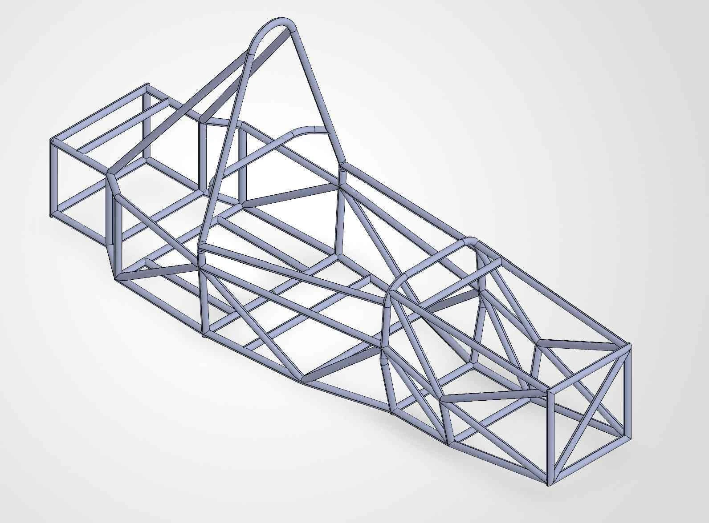

설계와 해석
SolidWorks · CATIA
ANSYS · Adams/Car · Altair Inspire
정적·비틀림강성 해석 · 위상최적화
안녕하세요, 권용민입니다.
직접 만들고, 주행으로 확인하고, 데이터로 설명합니다. 차량의 움직임을 이해하고 설계의 근거를 남기는 엔지니어를 지향합니다.

01 / SELECTED WORK
설계·제작·실차 시험부터 문서화와 외부 협의까지, 다섯 가지 경험을 정리했습니다.
반복 가능한 냉각·고장 시험조건을 준비하는 파란학기 프로젝트에서 기계 설계와 제작을 맡고 있습니다. 현재 기록은 설계·부품 검토·조립 준비 단계입니다.
02 / IDEAS & COMPETITIONS
공개 데이터의 평가 구조를 점검하고, 정책을 제안하고, 하나의 메시지를 영상과 디자인으로 전한 작업입니다.
각 작업의 수상 여부와 산출물 단계를 함께 표시했습니다. 제안의 기대효과는 실제 운영 성과와 구분합니다.
03 / ABOUT ME
설계의 이유를 이해하고, 제작 과정에서 확인하고, 시험 결과로 다시 질문하는 것을 좋아합니다.
아주대학교에서 기계공학을 전공하고 미래자동차를 복수전공하고 있습니다. Formula Student 팀 A-FA에서 드라이버, 팀장과 서스펜션 담당을 경험하며 차량 개발의 여러 단계를 연결해 왔습니다. 차량시험과 승차감·조종안정성을 더 깊이 배우고 싶습니다.
혼자 만든 결과보다 함께 재현할 수 있는 과정을 중요하게 생각합니다. 계측팀의 센서 로그를 바탕으로 분석하고, 시험기관과 조건을 협의하고, 후배에게 판단의 근거를 설명하는 일도 제 경험의 일부입니다.
국·영문 프로필 PDF · 2쪽04 / TOOLKIT
SolidWorks · CATIA
ANSYS · Adams/Car · Altair Inspire
TIG·아크용접 · 3D프린팅 · CFRP
4-way 댐퍼 세팅 · 실차 데이터 분석
기술 보고서 · 스터디 운영
후원사 보고 · 시험기관 협의
05 / RESEARCH & RECORDS
권용민 단독저자 · 실차 주행 계측 기반 연구
한국자동차공학회 추계학술대회
권용민·남선우 공동저자 · 지식관리 체계 제안
한국자동차공학회 추계학술대회
한국자동차공학회 오토저널 2026년 10월호
대학생 객원기자 집필 기사
우수상 · 팀 수상
우수상 · 팀 수상
e-Formula 에너지효율 우수상 · 팀 수상
2023 KSAE e-Formula 동상 · 기술아이디어 금상
2022 KSAE Baja 장려상
모두 A-FA 팀 수상입니다.
수상 · 아주대학교 교수학습개발센터
장려상 · 산업통계 활용수기
장려상 · 시나리오
영어학원 조교 · 대학 행정업무 지원
아름다운가게 116시간 · 청소년 학습 멘토링 40시간